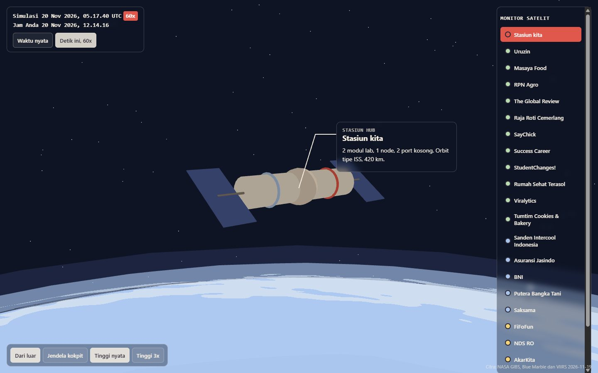
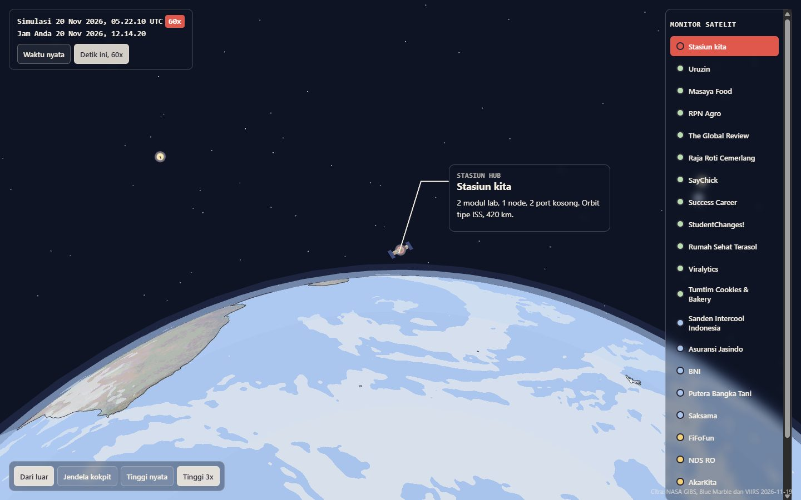
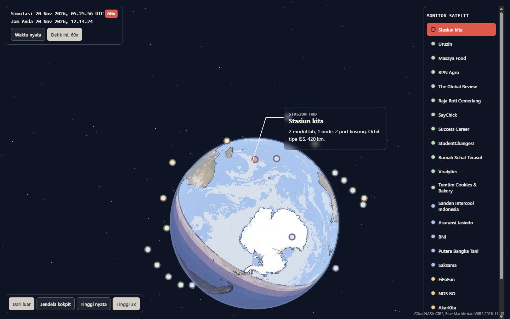
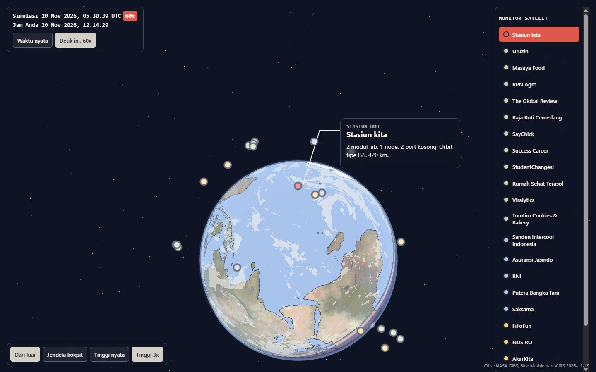
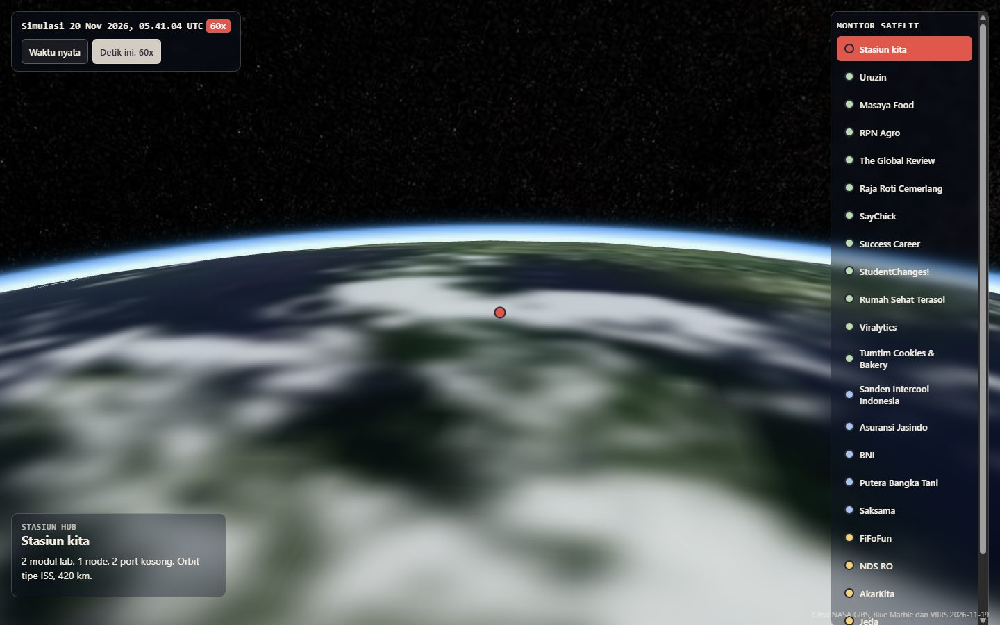
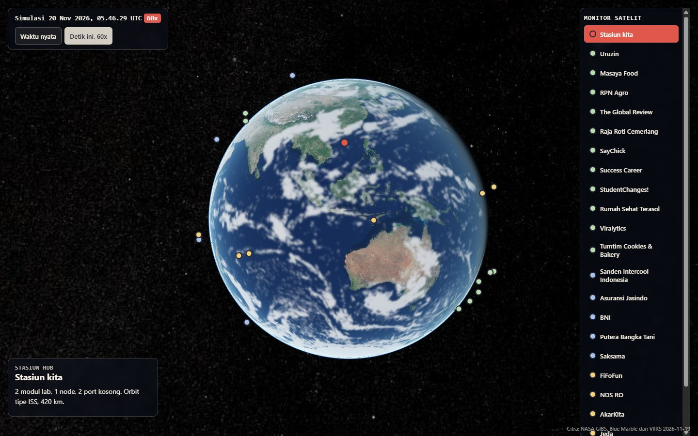
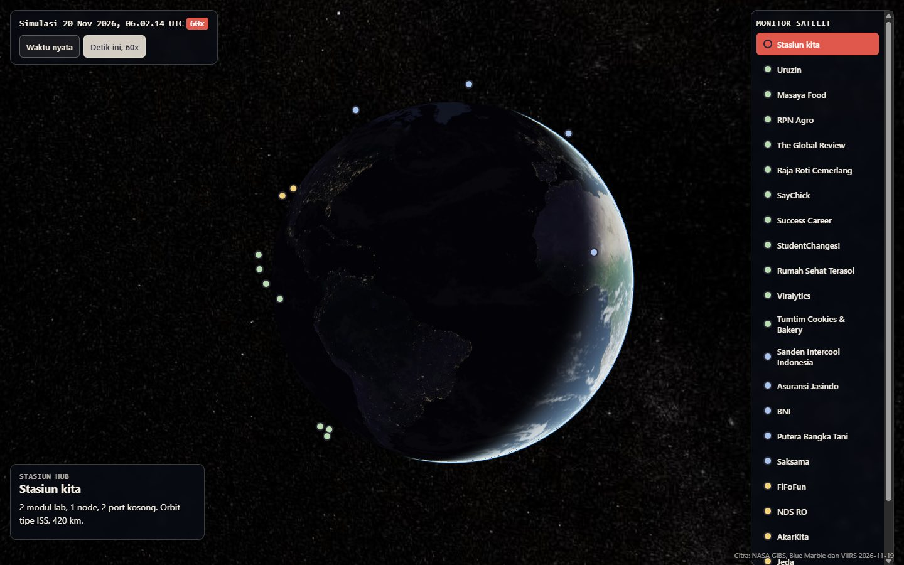

Lapisan bumi: A three.js toon, B CesiumJS
Keduanya memakai lapisan yang sama dari NASA GIBS: Blue Marble untuk darat, lampu kota Black Marble, dan awan dari citra VIIRS kemarin. Posisi matahari dan orbit satelit juga sama.
A. three.js, gaya toon
Buka versi interaktif- Warna darat dari Blue Marble, dipadatkan ke anak tangga pastel
- Awan nyata bertepi tegas, garis pantai vektor, pita senja USNO
- Satelit dan stasiun berbentuk 3D toon




B. CesiumJS, fotorealistis
Buka versi interaktif- Citra NASA apa adanya, cahaya dan atmosfer bawaan Cesium
- Ubin peta dimuat bertahap, buram sampai ubinnya datang
- Satelit hanya titik, model 3D perlu dibuat GLB


